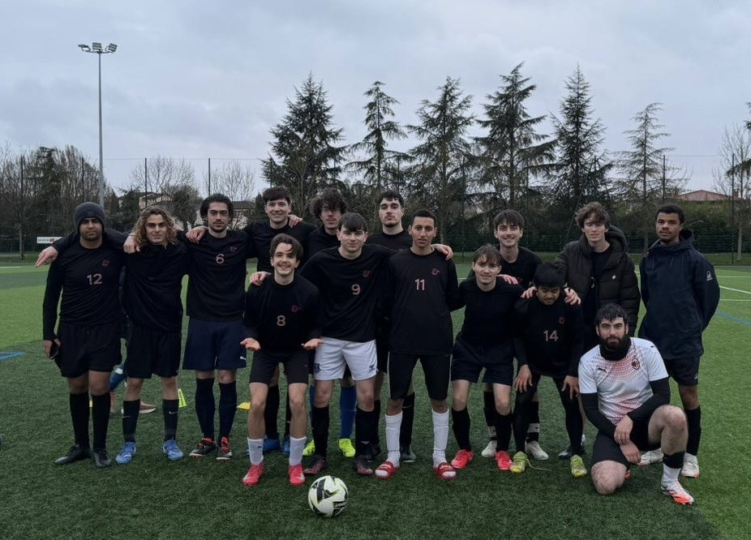
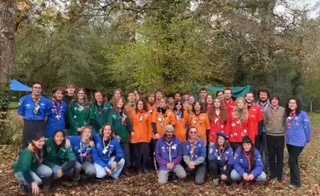
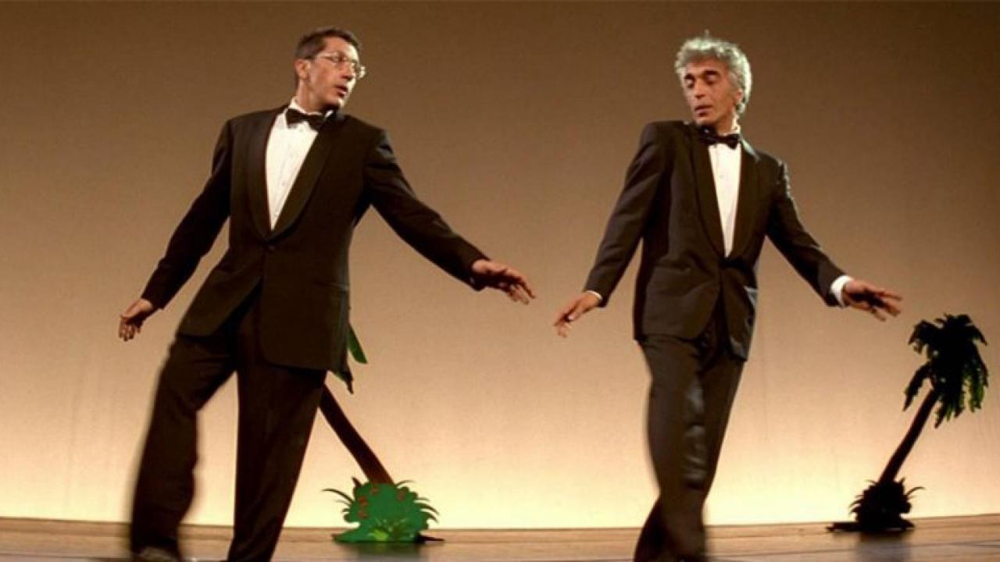

Sport
I play football with university. The activity helps me to keep shape, evacuate the pressure and have a good time with friends. I also exercise with muscle-building and running
A few hobbies and activities I enjoy outside of my studies.

I play football with university. The activity helps me to keep shape, evacuate the pressure and have a good time with friends. I also exercise with muscle-building and running

I've been a scout for 10 years when I was a kid and now I am a chief scout of a 25-children unity. It's a volunteer job which requires myself to be creative, enterprising, exemplary but I appreciate, above all, sharing what I learned and cared when I was among them.

I'm a huge fan of cinema, explicitly of horror and drama. I've also been treasurer of my school's movie club.